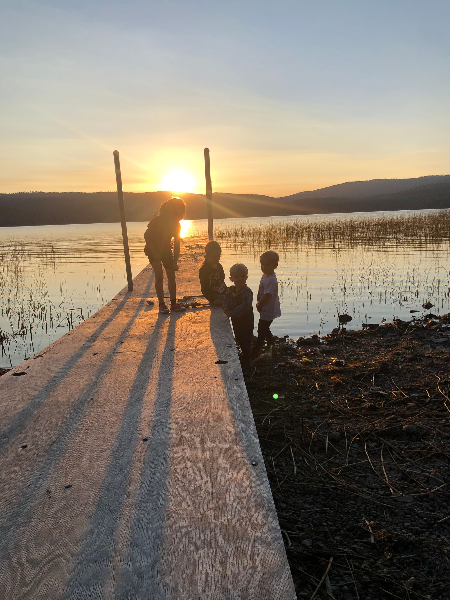
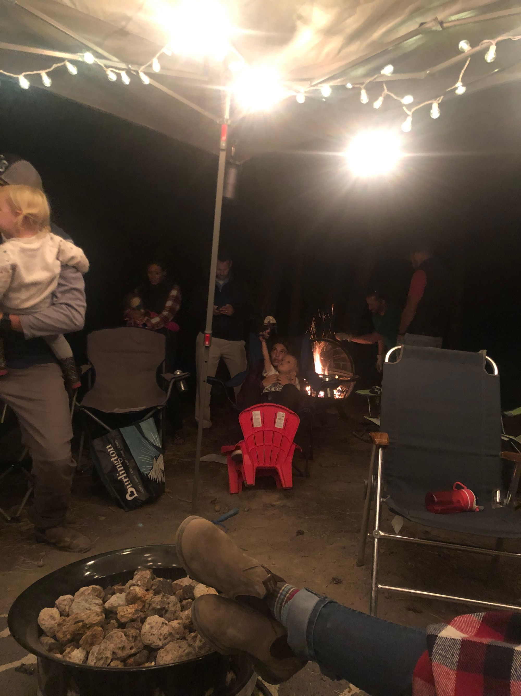
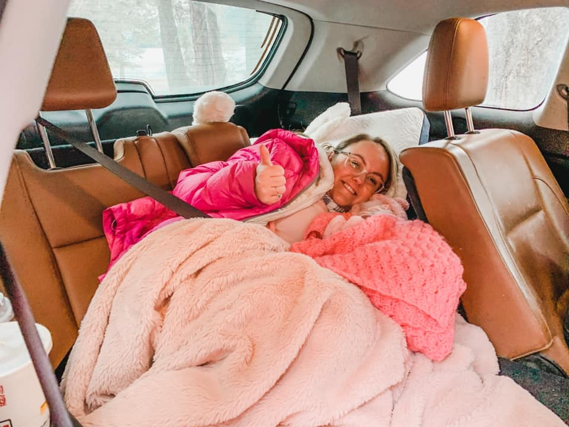
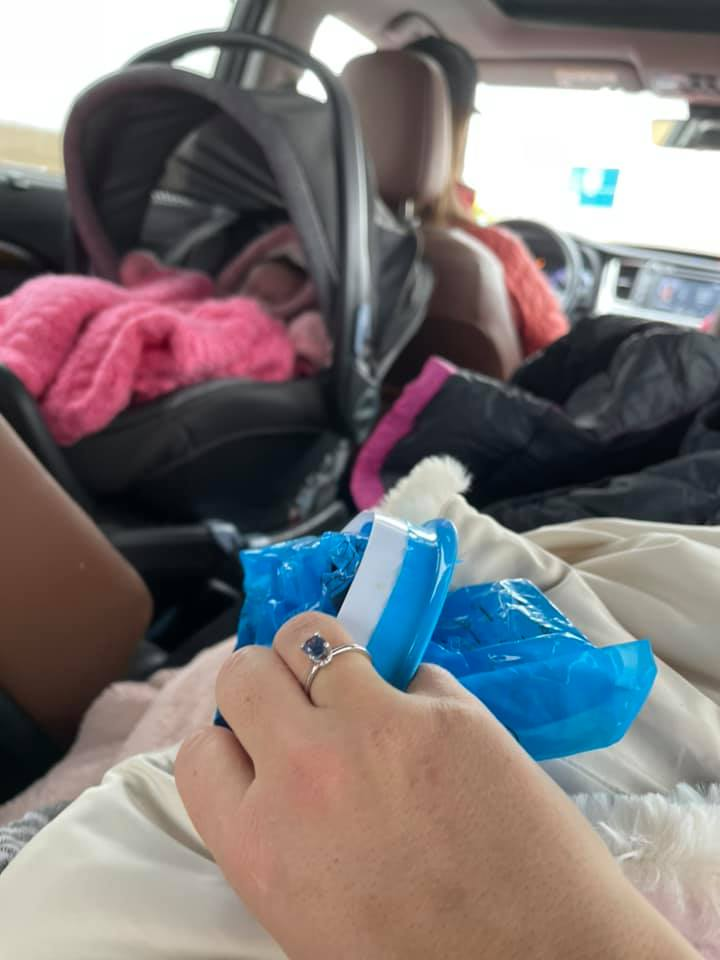
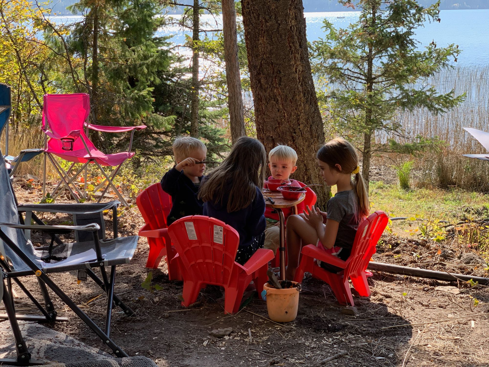

I spent close to every weekend at this spot.
A shining bright in a tough year, we purchased a rundown lake property with two other families. It became a place of peace, joy, laughter.
Not wanting to be left behind, and ready to get out of my dark room, we packed up every Friday and made the forty minute drive.
Some weekends it would just be our family, other times it would be a big party. Friends pulling their trailers filled with kids, parking them in random spots.
Pontoon rides, a pink flamingos, aluminum boat rides, the water splashing my face.
I would often tell people the worst part of HG was the PICC line as I couldn't get it wet, limiting my options to be on the water.
Growing up on a lake, water has always been healing, so I would do my best to join in the fun, staying as dry as possible. Wrapping my arm in those flimsy plastic bags they would give me from the I.V Center, I would slowly make my way down to the lake.

Most times my husband would follow me with a camp chair in tow, ensuring I could sit once I arrived at my destination.
I was worried I would have some amount of PTSD from this place, as if I would remember all the times I puked, all of the nausea.
But instead the joyful memories flow.
A simple worship night. My best friend bringing her guitar. Adults, teenagers, toddlers running around in the dusk light, a firepit burning in the back.
Attached to my IV, I laid back in my chair, soaking in the beauty of the scene.

After two weeks stuck in bed, I couldn't wait to show my Mother-in-Law this healing place. Braden setup a bed in the back of our Toyota Highlander and the adventure began.
Driving past the gorgeous mountains of Flathead and pulling down our gravel driveway, I could feel the healing flowing over me.
Taking a picture with my lovely Lorelai, the place we battled together, the place my husband and I opened the card announcing we were having a GIRL, I felt even more closure.

Side note: Shout out to my hot husband and cozy mother-in-law who made me a little bed in the back, my pink bear baby in view.

I didn’t realize how triggered I would be by the car, pulling out of our driveway I said,
“pass me a puke bag!”
As if emesis bags were my comfort blanket. We also stopped and picked up the ONE safe drink I found, McDonalds Diet Coke. I am healing. I am well!

